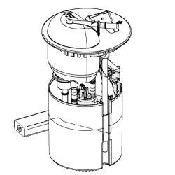

1040AC FUEL LEVEL GAUGE CHECK
- Path
- Test > 10 ENGINE > 1040 FUEL TANK AND PIPES > 1040A FUEL TANK AND COMPONENTS > 1040AC FUEL LEVEL GAUGE CHECK
- Kind
- test / check procedure
- Applies to
- all engines; all production periods
- Interactive page
- https://sloeber94.github.io/elrnDB-fCrm/en/#/194002229
Applies to: all engines; all production periods
Disconnect the connection from the fuel intake assembly.
Connect using an Examiner in Ohmmeter mode to the connection for the fuel intake assembly at pins 5 and 6
Read a resistance proportional to the level of the fuel as illustrated in the table below
Fuel quantity [litres] | Resistance value [ohm] |
|---|---|
62 | >50 |
54 | 73 |
46 | 107 |
38 | 133 |
31 | 159 |
23 | 186 |
15 | 216 |
8 (riserve) | 248 |
1 | 300 |
The following figure shows the fuel pump assembly
